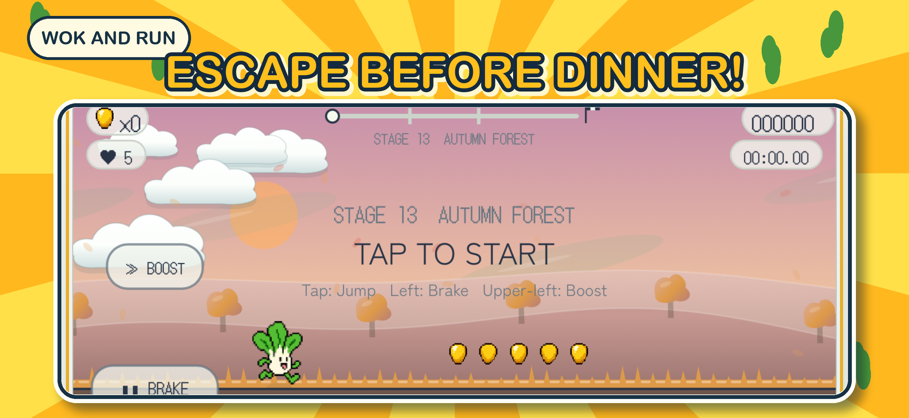
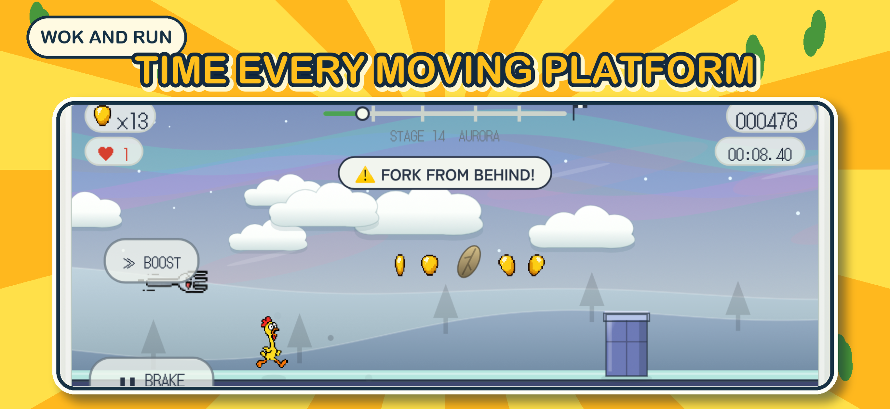
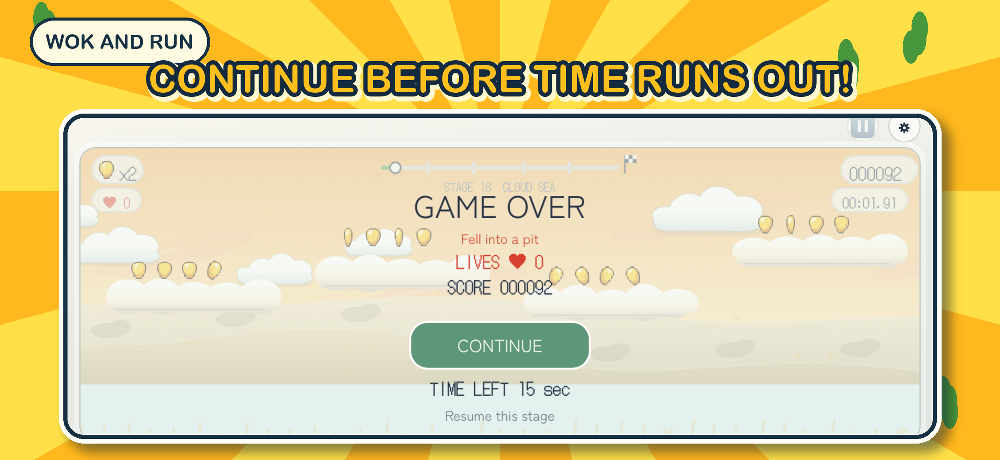

Two unlikely heroes
Surprise Chicken runs fast. Bok Choy jumps higher. Choose the runner that fits the stage.
Surprise Chicken and Bok Choy are about to become tonight’s dinner. Escape the kitchen, cross mountains and rivers, and race toward freedom.
Surprise Chicken runs fast. Bok Choy jumps higher. Choose the runner that fits the stage.
Snow, fog, strong winds, moving platforms, cloud-top courses, rivers, and hazards change every run.
Tap to jump. Brake before danger. Boost when you need a burst of speed.


